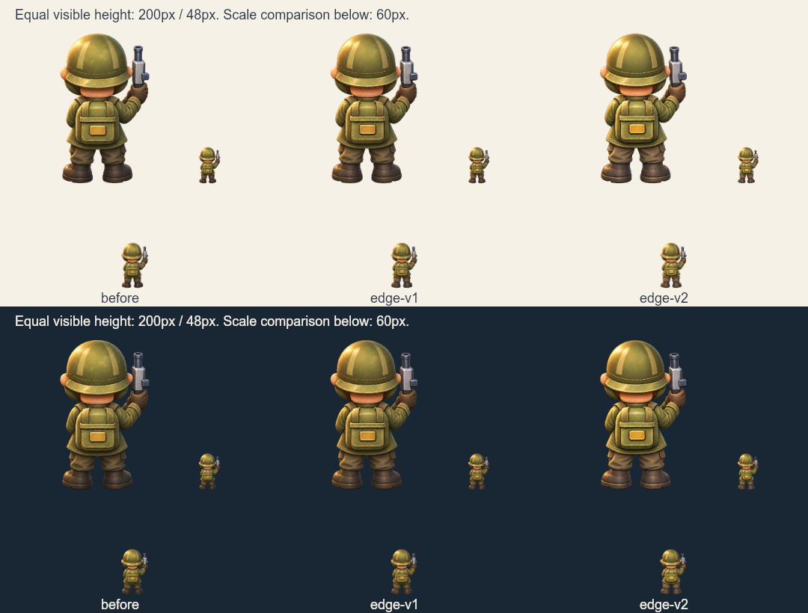

待视觉确认，未接入运行时。上/下半分别为浅/深底。三版均提供等高200px、48px与60px对照。按alpha≥128的可见主体计算高度，只用于审样；原图完整绘制，未去除半透明边缘。

| 角色 | 母版 | KiB | 非零alpha不触边 |
|---|---|---|---|
| before | 1122×1402 | 899.7 | 待修整 |
| edge-v1 | 1122×1402 | 847.7 | 待修整 |
| edge-v2 | 1122×1402 | 812.6 | 通过 |
静态独立造型对照不等于游戏实际布局、帽标/血条遮挡、攻击时点、碰撞或设备验收。锚点、部件拆分及动态接入仍待完成。